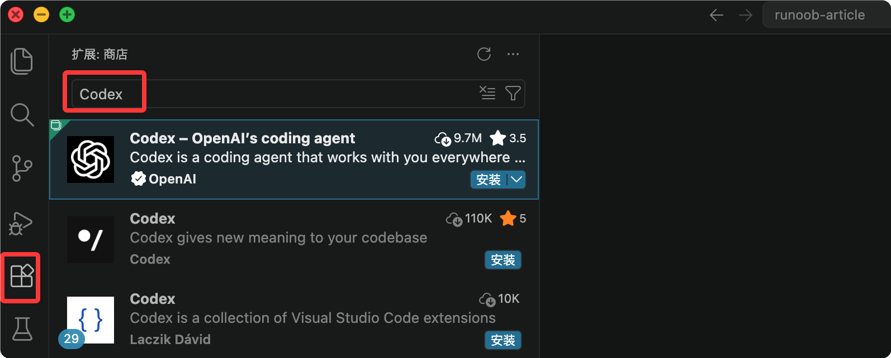

Técnicas avanzadas de uso de Codex
Después de completar la instalación básica y la primera conversación, el verdadero valor de Codex radica en integrarlo en el flujo de trabajo diario de desarrollo.
Este artículo cubre cinco áreas avanzadas: configuración de proyectos, gestión de sesiones, integración con editores, automatización de CI/CD y técnicas de prompts, para ayudarte a que Codex entienda tu proyecto, recuerde tus convenciones y trabaje automáticamente en el pipeline.
I. Usa AGENTS.md para escribir el "documento de incorporación" de Codex
AGENTS.md es un manual del proyecto escrito para Codex. Se coloca en la raíz del proyecto, se carga automáticamente en cada inicio y permanece vigente durante toda la sesión.
¿Por qué se necesita?
Codex, por defecto, no sabe nada de tu proyecto.
No sabe si usas App Router o Pages Router, no sabe qué archivo debe usarse de forma unificada para las operaciones de base de datos, ni qué archivos no se deben tocar.
Si hay que volver a explicar el contexto en cada conversación, la eficiencia será muy baja y propensa a errores.
AGENTS.md permite escribir esta información una sola vez y que siga siendo válida, ahorrando la molestia de repetirla.
Qué contenido escribir
Un AGENTS.md eficaz generalmente incluye cuatro tipos de información: descripción general del proyecto, stack tecnológico, convenciones importantes y elementos prohibidos.
A continuación se muestra un ejemplo completo:
# AGENTS.md ## 项目概述 这是一个基于 Next.js 14 + Prisma + PostgreSQL 的 SaaS 应用。 使用 App Router，不使用 Pages Router。 ## 技术栈 - 前端：Next.js 14, React 18, TailwindCSS, shadcn/ui - 后端：Next.js API Routes, Prisma ORM - 数据库：PostgreSQL 15 - 认证：NextAuth.js ## 重要约定 - 所有数据库操作必须通过 lib/db.ts 中的 prisma 实例 - API 路由错误统一用 lib/api-error.ts 处理 - 环境变量在 .env.local 中，参考 .env.example ## 禁止事项 - 不要修改 prisma/schema.prisma，除非我明确要求 - 不要删除任何现有测试 - 生产环境的 .env 文件不要碰
La sección de "elementos prohibidos" es especialmente importante. Al ejecutar tareas, Codex infiere activamente qué archivos necesitan modificarse; sin límites claros, podría tocar lugares que no quieres que toque. Dejar claras las líneas rojas es mucho más fácil que remediar después de que surjan problemas.
Estructura jerárquica de configuración
AGENTS.md admite tres niveles de anidamiento, ordenados por prioridad de menor a mayor.
Cuanto más cercano al directorio actual esté el archivo, mayor será su prioridad. En el mismo directorio, si AGENTS.override.md existe, el AGENTS.md del mismo nivel se omite.
| Nivel | Ruta | Alcance | Prioridad |
|---|---|---|---|
| Nivel global | ~/.codex/AGENTS.md | Convenciones comunes entre proyectos | 低 |
| Nivel de proyecto | repo/AGENTS.md | Normas a nivel de repositorio | 中 |
| Nivel de sobrescritura | repo/services/payments/AGENTS.override.md | Reglas especiales para subdirectorios | 高 |
El nivel global es adecuado para escribir convenciones que se cumplen en todos los proyectos, por ejemplo:
# ~/.codex/AGENTS.md ## 全局约定 - 安装依赖时优先使用 pnpm - 修改 JavaScript 文件后始终运行 npm test - 新增生产依赖前先请求确认
Una vez completada la configuración, puedes verificar si la carga es correcta con el siguiente comando:
codex --ask-for-approval never "Summarize the current instructions."
II. Gestión de sesiones: continuar tareas grandes entre días
La función de gestión de sesiones te permite exportar el estado actual de la conversación a un archivo y restaurarlo directamente la próxima vez, sin necesidad de volver a explicar el contexto.
Contexto del problema
La ventana de contexto de Codex es limitada.
Al manejar una tarea grande que abarca múltiples archivos y requiere avanzar por fases, si cierras la terminal a mitad de camino o cambias a otra cosa, el contexto se pierde al regresar: Codex no recuerda lo que se discutió antes ni las decisiones que se tomaron.
Exportar la sesión puede resolver este problema, permitiéndote restaurar el estado de la conversación en cualquier momento desde un punto anterior.
Uso básico
Estos son los comandos comunes relacionados con la gestión de sesiones:
Ejemplo
/export session-2024-01-15.json
# Restaura cuando continúes la próxima vez
/load session-2024-01-15.json
# Restaura directamente la sesión más reciente (la más usada)
codex resume --last
# Muestra todas las sesiones guardadas
ls ~/.codex/sessions/
Cuándo exportar
No es necesario exportar en cada conversación. Las siguientes situaciones valen la pena guardar:
| Escenario | Descripción |
|---|---|
| Tareas multifase que se realizan entre días | La tarea se realiza durante varios días con divisiones de fase claras; después de guardar, la próxima vez puedes continuar directamente desde el último punto de interrupción. |
| Decisiones arquitectónicas importantes | Has discutido y llegado a una decisión arquitectónica importante con Codex; las tareas posteriores deben continuar basándose en esta decisión. |
| Procesos de depuración complejos | Al depurar un bug complejo, ya has descartado varias direcciones y no quieres volver a empezar desde cero la próxima vez. |
III. Integración con VS Code
Codex ofrece oficialmente una extensión de VS Code; una vez instalada, puedes iniciar conversaciones directamente en el editor sin cambiar a la terminal.
Instalación e inicio de sesión
Los pasos de instalación son los siguientes:
Primer paso, abre el mercado de extensiones (Cmd/Ctrl + Shift + X).
-
Segundo paso, busca "Codex" o "OpenAI Codex" e instala el complemento oficial.

-
Tercer paso, el primer uso requiere iniciar sesión con una cuenta de ChatGPT.
-
Cuarto paso, una vez que aparezca el ícono de Codex en la barra lateral, puedes usarlo.
Después de la instalación, puedes usar los siguientes atajos de teclado para operar rápidamente:
| Atajo de teclado | Función |
|---|---|
| Alt + G | Enviar el código seleccionado a Codex, incluyendo el contexto del archivo actual |
| Cmd + Shift + P | Abrir la paleta de comandos, escribir "Codex" para ver todos los comandos disponibles |
Modo BYO (para usuarios sin suscripción a ChatGPT)
Si ya has configurado tu propia API Key en la CLI (Anthropic, OpenAI u otros proveedores compatibles), puedes iniciar sesión en el complemento de VS Code con una cuenta gratuita de ChatGPT.
El complemento reutilizará automáticamente la configuración de modelos de la CLI y no obliga a usar ChatGPT Plus.
| Escenarios aplicables | Descripción |
|---|---|
| Ya tienes una API Key pero no quieres suscribirte adicionalmente a ChatGPT | Usa directamente tu propia API Key, sin necesidad de una suscripción de pago adicional |
| Quieres que VS Code y la CLI usen el mismo modelo | El complemento reutiliza automáticamente la configuración de la CLI; la experiencia en ambos extremos es completamente idéntica |
IV. Integración CI/CD
La CLI de Codex admite la ejecución en modo headless, no requiere interacción manual y es adecuada para integrarse en flujos automatizados.
¿Qué puede hacer Codex en el pipeline?
Estos son los usos comunes de Codex en CI/CD en modo headless:
| Uso | Descripción | Momento de activación típico |
|---|---|---|
| Actualizar automáticamente el CHANGELOG | Actualizar automáticamente CHANGELOG.md según los registros de commits después de cada fusión a la rama principal | Después de fusionar en la rama main |
| Generar documentación de API | Generar o sincronizar automáticamente la documentación de la API según los cambios de código | Después de hacer push del código |
| Revisión de código automática | Ejecutar automáticamente la revisión de código en el pipeline de PR y dejar comentarios | Cuando se crea o actualiza el PR |
Ejemplo de GitHub Actions
El siguiente flujo de trabajo, en cada push a la rama main, hace que Codex actualice automáticamente CHANGELOG.md según los últimos commits:
Ejemplo
name: Auto Update Changelog
on:
push:
branches: [main]
jobs:
update-changelog:
runs-on: ubuntu-latest
steps:
- uses: actions/checkout@v4
- name: Setup Node.js
uses: actions/setup-node@v4
with:
node-version: '22'
- name: Install Codex CLI
run: npm install -g @openai/codex
- name: Run Codex Task
env:
OPENAI_API_KEY: ${{ secrets.OPENAI_API_KEY }}
CODEX_QUIET_MODE: 1
run: |
codex exec --full-auto "Actualiza CHANGELOG.md según los últimos commits"
- name: Commit changes
run: |
git config --local user.email 'action@github.com'
git add CHANGELOG.md
git commit -m 'chore: update changelog [skip ci]'
git push
En la configuración, hay dos puntos clave que requieren especial atención:
| Elemento de configuración | Función | Descripción |
|---|---|---|
| CODEX_QUIET_MODE: 1 | Suprimir la salida interactiva | Evitar que el pipeline se quede bloqueado esperando entrada interactiva |
| --full-auto | Ejecución en modo headless | Permitir que Codex se ejecute directamente sin supervisión, sin esperar confirmación |
Al usarlo en CI, se recomienda especificar claramente en el AGENTS.md de la raíz del proyecto el alcance de archivos que Codex puede modificar en modo automático, para evitar cambios accidentales debidos a una interpretación incorrecta del prompt.
V. Técnicas de prompts
La calidad de la salida de Codex depende en gran medida de cómo plantees tus preguntas.
Los siguientes cinco consejos abordan los problemas más comunes de los nuevos usuarios, y cada uno incluye ejemplos concretos.
Truco 1: Proporciona suficiente contexto
Codex no lee la mente. Instrucciones como «arregla el error» hacen que adivine a ciegas, y el resultado a menudo no es lo que quieres.
A continuación se muestra un ejemplo comparativo:
| Redacción no recomendada | Redacción recomendada |
|---|---|
| «Arregla el error» | «Al iniciar sesión aparece el error TypeError: Cannot read properties of null, ocurre en la línea 42 de src/auth/login.ts. Esta función se encarga de validar el token JWT. Ayúdame a encontrar y solucionar este problema» |
Un contexto eficaz incluye tres elementos:
| Elemento | Descripción | Ejemplo |
|---|---|---|
| Fenómeno concreto | Mensaje de error o manifestación concreta | TypeError: Cannot read properties of null |
| Ubicación implicada | Archivo y número de línea | Línea 42 de src/auth/login.ts |
| Responsabilidad del código | La función original de este código | Validar el token JWT |
Truco 2: Divide las tareas complejas en dos pasos
Para tareas con un alcance de cambios amplio, primero pide a Codex que analice y enumere un plan; una vez que confirmes que no hay problemas, ejecútalo.
Hacerlo de una vez parece más rápido, pero cuando hay una desviación de rumbo el costo es mayor.
Ejemplo
codex "Analiza la calidad del código del directorio src/api/, enumera los principales problemas y no modifiques ningún archivo"
# Paso 2: Ejecutar después de confirmar el plan
codex "De acuerdo, según el plan que propones, primero aborda el problema del manejo de errores; del resto me encargo yo tras revisarlo"
Truco 3: Usa el modo ask para familiarizarte primero con la base de código
askEl modo ask es un modo de solo lectura, adecuado para entender la estructura y la lógica del código existente antes de ponerte a trabajar.
Entender antes de modificar ahorra más tiempo que modificar y luego volver a entender.
Ejemplo
# ask 模式不会触发任何文件修改 codex -a ask "这个项目是如何处理用户认证的？梳理完整的认证流程"
Una vez que lo tengas claro, sal de la sesión actual y vuelve a iniciar en modo editable:
# 可编辑模式（需要确认） codex -a auto # 全自动执行（谨慎使用） codex -a full-auto
Flujo de trabajo recomendado:
ask ↓ 理解代码结构 ↓ 确定修改方案 ↓ 重新启动 Codex ↓ 进入可编辑模式 ↓ 执行修改
Nota: En la CLI ya no se admite
/approvalscambiar el modo de permisos durante la ejecución. Debe especificarse al iniciar mediante-ael parámetro. El cliente de escritorio todavía admite cambiar dentro de la sesión.
Truco 4: Usa instrucciones negativas para establecer límites
Decirle a Codex qué no tocar es tan importante como decirle qué hacer.
Especialmente en tareas de refactorización que involucran múltiples archivos relacionados, si los límites no están claros es fácil que se produzcan modificaciones colaterales innecesarias.
Ejemplo
codex "Refactoriza las funciones de formato de fecha en utils/date.ts; no modifiques las firmas de las funciones y no cambies los archivos de prueba"
Truco 5: Pide un plan antes de ejecutar
Para tareas de las que no estés seguro, pide primero a Codex que enumere lo que planea hacer.
Este paso casi no toma tiempo, pero te permite detectar desviaciones de rumbo en una etapa temprana y evitar avanzar demasiado por el camino equivocado.
# 先要计划 codex "你打算怎么实现这个功能？先列出步骤，不要执行" # 确认计划合理后再推进 codex "计划没问题，开始执行第一步"
Resumen
Estas cinco direcciones cubren el recorrido completo desde la «configuración del proyecto» hasta las «operaciones diarias» y la «automatización».
Al principio no es necesario usar todas; se recomienda seguir el orden: primero escribe bien AGENTS.md para que Codex entienda tu proyecto, y luego intégralo gradualmente en el flujo de trabajo de VS Code y en los procesos de CI/CD.
Acumular poco a poco las técnicas de prompts en el uso diario es más efectivo que intentar recordarlas de una sola vez.
Otras extensiones
Haz clic para compartir notas
<p style="font-size:14px;">¡La nota debe ser una extensión del contenido de este artículo!</p><br> <p style="font-size:12px;"><a href="../tougao.html" target="_blank">Envío de artículos: puedes hacer clic aquí</a></p> <p style="font-size:14px;"><a href="../w3cnote/runoob-user-test-intro.html" target="_blank">Cómo obtener el código de invitación de registro</a></p> <h3 class="text-muted"><i class="fa fa-info-circle" aria-hidden="true"></i> Antes de compartir una nota, debes <a href=";.html" class="runoob-pop">iniciar sesión</a>.</h3> <p><a href="../w3cnote/runoob-user-test-intro.html" target="_blank">Cómo obtener el código de invitación de registro</a></p>